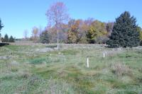
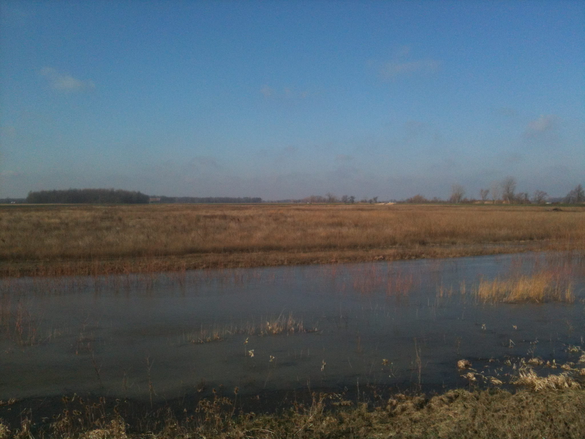

Setting Stopover Conservation Goals
Although very challenging to establish, articulating conservation goals, based on scientific, operationally realistic, and objective criteria, provides a foundation for estimating the magnitude of work and financial resources needed to achieve conservation results. Although goals are never perfect, they provide important guidelines to direct our work and, when accomplished, when to celebrate and when to focus resources on other conservation goals.
We have set goals for migrating landbirds in the Great Lakes region.
Our goal is to provide 40% of the land base within 15 miles (25 km) of Great Lakes shorelines and connecting waters as suitable habitat for migrating landbirds (see Model and caveat tab for definition of suitable habitat). Where this goal is not attainable due to cost and/or lack of land with natural cover or potential restoration, adjustments must be made to account for existing developed and agricultural areas. In these cases, local criteria will be needed to supplement our models to determine the feasibility of restoring or creating high quality stopover habitats.
The basis for this goal is that several studies suggest that landbirds are more crowded…
We have not set goals for shorebirds…
Achieving goals-early adopters, and share your story
Achieving stopover conservation goals
Our models are new and ready to be used. Earlier stopover models have already driven conservation work. Exemplary projects include:
- Ozaukee County, Wisconsin, Forest Beach Preserve;
- DTE Energy Rouge River Power Plant, Michigan; and
- Ottawa National Wildlife Refuge, Ohio.
SITE: DTE Energy: River Rouge Power Plant, Detroit, Michigan
Wildlife Habitat Program: Migratory Bird Benefits and Mowing Elimination
By: Craig Tylenda and Jason Cousino, DTE Energy. 26 April 2013INTENDED MIGRATORY BIRD OUTCOMES
The goal of the project is to provide “fire escape” stopover sites for migratory landbirds in a highly urbanized environment and secondarily to provide nest sites for Common Terns.
BACKGROUND
The DTE Energy River Rouge (RRPP) power plant is a coal fire plant located on the Detroit River in River Rouge, Michigan which began operating in 1956 and currently operates two active units that produce more than 600 MW of power. The site has a total area of approximately 105 acres of which approximately 11 acres are actively managed as wildlife habitat, essentially the entire area of the site not actively used for plant operations. Given the plant’s location along a major bird migratory route and the heavily industrialized state of the general area, the site provides a valuable stopover point for migrant birds. Employees at the plant began formal planning of wildlife habitat projects in 2003 and first obtained certification from the Wildlife Habitat Council in 2004. The site was recertified in 2006, 2009 and 2012 while being nominated as the corporate habitat of the year in both 2006 and 2009 and obtaining Regional Corporate Habitat of the Year recognition in 2013.
The focus of the wildlife habitat projects has been the conversion of both turf grass and barren areas into those which support native plant species. A majority of the space on the site which is not being utilized for plant operation activities has been transformed into wildlife habitat. As non-native turf grasses provide little or no benefit to most native wildlife, a major focus of the habitat restoration efforts has been the elimination of grass covered areas and replacement with native plants. The first major project was the removal of grass and installation of native forbs and grasses in a garden of approximately 12,000 square feet. The latest endeavor has been the conversion of a turf grass covered 5-acre field into a habitat approximating something of an oak savanna type array of plants and trees. The establishment of wildlife habitat has eliminated much of the need to mow lawns on the site. The effort has resulted in the near elimination of mowing and cost savings of approximately $50,000 per year, a diversity of wildlife habitat, and has helped instill an understanding of the benefits of utilizing native plants in landscaping. Prescribed burns are conducted at plantings for fire-dependent native plant species.
RESTORATION PLAN, RESULTS AND PROJECT SUMMARIES
The employees at the plant have conducted a number of habitat related projects including the installations of various nest boxes, public outreach events, and coyote research among others. The following details only those projects which directly improve or create habitat for birds.
One of the most recent projects initiated at RRPP the RRPP Nature Area is the largest single project for wildlife habitat on the site. Slightly less than 5-acres, and located just outside of the plant grounds approximately 1/3-mile from the Detroit River shoreline, a turf grass field was being maintained through extensive mowing throughout the year. Beginning in 2010 the grass was killed, berms established along the roadways, bluebird / tree swallow nest boxes installed, and vegetation established that would approximate oak-savanna type diversity.
Area: Approximately 5-acres
Goals: Provide additional habitat for wildlife, provide opportunities for school classes to engage in field trips that educate on wildlife habitat, and reduce the mowing expense.
Approximate Cost: $45,000
Approximate Mowing Reduction $10,000 / year
A total of 53 shrubs and trees were planted to compliment several evergreens which were already present:
- (15) Serviceberry (Amelanchier arborea) – 8 foot tall
- (8) Red Maple (Acer rubrum) - 3" diameter
- (8) Sugar Maple (Acer saccharum) - 3" diameter
- (8) Swamp White Oak (Quercus bicolor) - 4” diameter
- (3) Swamp White Oak (Quercus bicolor) - 5" diameter
- (7) Northern Red Oak (Quercus rubra) - 3" diameter
- (2) Northern Red Oak (Quercus rubra) - 4" diameter
- (2) Pin Oak (Quercus palustris) - 4" diameter
In addition, the area was seeded with a prairie mixture:
- Andropogon gerardii - Big Bluestem
- Bouteloua curtipendula- Side-Oats Grama
- Carex spp. Prairie Sedge Mix
- Elymus canadensis - Canada Wild Rye
- Panicum virgatum - Switch Grass
- Schizachyrium scoparium- Little Bluestem
- Sorghastrum nutans - Indian Grass
- Avena sativa -Common Oat
- Lolium multiflorum - Annual Rye
- Asclepias syriaca -Common Milkweed
- Asclepias tuberosa- Butterfly Weed
- Aster laevis - Smooth Blue Aster
- Aster novae-angliae - New England Aster
- Chamaecrista fasciculate- Partridge Pea
- Coreopsis lanceolata - Sand Coreopsis
- Echinacea purpurea - Broad-Leaved Purple Coneflower
- Heliopsis helianthoides - False Sunflower
- Lupinus perennis - Wild Lupine
- Monarda fistulosa - Wild Bergamot 0.25
- Pycnanthemum virginianum - Common Mountain Mint
- Ratibida pinnata - Yellow Coneflower
- Rudbeckia hirta - Black-eyed Susan
The site’s Detroit River shoreline has been substantially improved over the past seven years with the work performed in phases over this period. The area was original a mixture of mostly grass and gravel covered surfaces with Austrian pines which had been planted, willows which had been planted and also self-established, and various shrubby plants including hawthorn. The primary invasive plant was common buckthorn which has been effectively controlled. The areas are now primarily native plants including grasses, forbs, and shrubs such as serviceberry, dogwood, and holly.
Area: Approximately 1 acre
Goals: Provide additional habitat for wildlife, reduce the mowing expense, and improve aesthetics.
Approximate Cost: $25,000
Approximate Mowing Reduction $5,000 / yearBalance of Site
In addition to the previous two projects which were identified, the balance of the site which was being mowed has been planted with native plants or simply allowed to revegetate. This includes a ¼ mile long berm which already had a multitude of trees growing on it but which had its undergrowth mowed. A multitude of native shrubs were planted to create additional shade and thickness, controlling grass growth.
A large grassy area which was occasionally mowed had its mowing eliminated in 2003 and now provides an open area that benefits a variety of birds and mammals. Brush piles were also constructed which provide additional habitat value.
Area: Approximately 5 acres
Goals: Provide additional habitat for wildlife, reduce the mowing expense
Approximate Cost: $40,000
Approximate Mowing Reduction $35,000 / year
In support of the common tern rookery restorations which are occurring along the Detroit River, two former freighter mooring cells were modified to provide a nest site for common terns. The walls of the cells were built higher to prevent tern chicks from falling into the water, placement of gravel and sand, and a seasonal installation of decoys and sound system which plays tern calls. The surrounding waters provide the small fish which the terns prefer.
Area: Approximately 1/5 acre
Goals: Provide nesting for common terns
Approximate Cost: $20,000
Approximate Mowing Reduction $0 / year
SITE: Forest Beach Migratory Preserve, Ozaukee, Wisconsin
Creation of the Forest Beach Migratory Preserve
By: Kim Grveles, Wisconsin Stopover Initiative Coordinator, Wisconsin Department of Natural Resources and Shaw Graff, Executive Director, Ozaukee Washington Land Trust. 30 April 2013.INTENDED MIGRATORY BIRD OUTCOMES
The goal of the project is to provide stopover sites for migrating landbirds, shorebirds and waterfowl.
BACKGROUND
In 2007, the Wisconsin Stopover Initiative (WISI) used migratory bird stopover habitat models developed for Wisconsin’s Lake Michigan basin to evaluate a site and surrounding landscape in northern Ozaukee County. The site, known as Squires Country Club, was a 142-acre golf course located 600 feet inland from the Lake Michigan shore and included 100 feet of sandy beach on the shore. The Ozaukee Washington Land Trust (OWLT) was considering acquisition of the property to restore habitat for wildlife. OWLT was particularly interested in providing stopover habitat for shorebirds and waterfowl and wanted to know if the property had value for other bird groups.
Application of WISI Stopover Habitat Models.
WISI examined three habitat models – landbird, shorebird, and waterfowl/waterbird – for migratory bird stopover potential at Squires County Club and adjacent areas. The landbird model revealed woody cover less than ¼ mile from Lake Michigan immediately east of the property with wooded wetlands and oak cover adjacent on the west (see Fig. 1). These very high priority habitat features were separated by mowed golf course fairways, a small (5-acre) mature woodlot, and ponds that served as “water hazards” for golfers. Restoration of upland golf fairways, including planting native trees and shrubs, would connect the existing habitat corridors, increasing the amount of stopover habitat available for landbirds in close proximity to the shore.
The shorebird model indicated hydric soils were present on the property, but removal of drain tiles would be necessary to restore wetlands with mudflats for shorebird stopover habitat. According to the model, drained hydric soils located less than 10 miles from the Lake ranked as a high priority shorebird stopover habitat attribute because flooding in wet years had potential to provide foraging opportunities. Restoration of wetlands on these soils would increase the ranking to very high priority for shorebirds.
For waterfowl/waterbirds, near-shore (<1/4 mile) open water of Lake Michigan was the nearest priority stopover habitat feature to the property. Hydric soils on the property ranked as low priority, but would score as high to very high priority if restored to emergent marsh depending on size. Also, a small hardwood forested wetland adjacent to the property had potential to be used as stopover by some species of waterfowl (i.e. Wood Duck) and waterbirds (i.e. Green Heron).
Funding Sources: Acquisition and Restoration
Funding was provided by multiple sources, with the largest portion coming from the Knowles-Nelson Stewardship Program administered by the Wisconsin Department of Natural Resources. A loan as well as a major donation from Lake Road Properties, a private property holding company, allowed OWLT to close on the property in January, 2009 prior to receiving the Knowles-Nelson Stewardship grant award. In turn, OWLT sold 25 acres at the south end of the property to the holding company, which owned surrounding property. OWLT retained 116 acres that then became Forest Beach Migratory Preserve (FBMP). Various smaller grants and donations from individuals were also used to complete the acquisition.
In 2009, OWLT was awarded an American Recovery and Reinvestment Act Grant through the U.S. Fish and Wildlife Service. Purpose of the funding was to implement shovel-ready restoration activities, while stimulating the local economy by utilizing local contractors, businesses, and professionals for restoration activities. Amount of the grant award was $451,000, enough to pay for 10 years worth of restoration work, but the work had to be completed within an 18-month period.
Support for Acquisition
With assistance from conservation partner organizations including WISI, OWLT promoted the potential value of the site for migratory birds and stopover habitat. Although the township board was initially opposed to this acquisition, the public rallied behind the project and eventually convinced the town board to drop its opposition. Citizens recognized the importance of preserving this last large tract of open space on Lake Michigan in the county. To further build support, OWLT met with neighbors, who mostly viewed the project as a good alternative to commercial development. Professionals, neighbors, and local citizens testified in favor of the acquisition at township and county board meetings, while opposition to the project remained minimal.
RESTORATION PLAN, RESULTS AND PROJECT SUMMARY
OWLT invited partner organizations and neighbors to discuss development of a restoration plan. From the first meeting in March, 2009, a technical advisory committee was formed and Cedarburg Science, a local environmental consulting firm, was hired to coordinate the committee and to draft the plan (to access the plan go to http://owlt.org/visit-our-preserves/forest-beach-migratory-preserve/habitat-restoration-plan ). The restoration concept includes creating a patchwork of ten habitat types in the upland areas: Lake Michigan shoreline, mixed hardwood forest, savanna, oak savanna, conifer area, shrubland, wetlands including 5 constructed ponds, old field, native grasslands, and mowed, cool season grasslands. These habitats were designed to increase the diversity and abundance of feeding and resting areas used by a myriad of migratory bird species, with an emphasis on those listed as endangered or threatened or designated as species of conservation concern. Multiple wetland areas were restored to not only support birds, but also reptiles, amphibians, and aquatic invertebrates. An interpretive trail winds through all habitat types and includes observation platforms, a photography blind, and educational signs. Additional goals of the project included facilitating groundwater recharge, enhancing carbon sequestration, and improving Lake Michigan water quality by eliminating chemical and fertilizer applications and reducing water use requirements on the site. By providing public access and nature-based recreational and educational opportunities to the Lake Michigan coastal area, OWLT and partners hope to increase awareness and appreciation for migratory birds and natural resource conservation.
SITE: Ottawa National Wildlife Refuge, Oak Harbor, Ohio
Habitat Restoration in the Maumee Area of Concern
By: James Cole and Jennifer Thieme, The Nature Conservancy, 29 July 2013INTENDED MIGRATORY BIRD OUTCOMES
This project will provide 512 acres of critical stopover habitat for neotropical-nearctic migrants, shorebirds, waterfowl, and raptors as they concentrate near and migrate across Lake Erie.
BACKGROUND
The biologically productive coastal systems of Lake Erie provide critical stopover habitat to spectacular congregations of neotropical-nearctic migrants, shorebirds, waterfowl, and raptors; however, the western Lake Erie landscape has lost nearly 95% of these valuable marshes due to anthropogenic alterations in the last 200 years (Bookhout et al. 1989). Extensive ditching and draining, conversion to agriculture, and modified sedimentation patterns continue to threaten this coastal system, further reducing the amount of habitat available for both wetland and upland natural communities. Additionally, greater peak intensity of storms, a predicted result of climate change (Wuebbles and Hayhoe 2004), are likely to increase stress on these systems from non-point source pollution. Restoration is therefore essential to ensure the health and resilience of this stopover habitat.
In 1961, the Ottawa National Wildlife Refuge was established to provide habitat for waterfowl and other migratory birds, resident wildlife, and endangered and threatened species. The Refuge now exceeds 6,500 acres, including both restored habitats, such as emergent marshes and native prairies, and unrestored agricultural lands. A major component of this project included the conversion of 171 acres of these agricultural lands (hereafter, Blausey unit) to emergent marsh and reconnecting them to Lake Erie surface hydrology. Other project priorities included the native reseeding of wet meadows, reforestation of 80 acres of forest, invasive plant species removal, reconnecting 80 acres of emergent marsh to Lake Erie hydrology, and monitoring biological changes related to these actions. This summary will primarily focus on the restoration of the Blausey unit, expected to benefit state or federally listed species, such as America bittern, black tern, king rail, piping plover, and trumpeter swan, in addition to migrating birds.
RESTORATION PLAN, PROJECT SUMMARY, AND RESULTS
Project development and funding sources
The 171-acre Blausey tract’s location adjacent to the Toussaint River and less than three miles from Lake Erie rendered it prime potential habitat not only for migrating birds, but also spawning fish. In 2011, The Nature Conservancy, Ducks Unlimited, and U.S. Fish and Wildlife service collaborated to establish project details and examine potential funding sources. Wildlife habitat and water quality improvements at this site, combined with restoration at several other sites, aligned well with the goals of the Great Lakes Restoration Initiative and National Oceanic and Atmospheric Administration. The Nature Conservancy submitted a proposal to NOAA and was awarded $1,306,520 to lead the project beginning fall 2011. Match was provided by TNC in the form of unrecovered indirect costs and contractual expenses for invasive plant treatment. The bulk of the award amount was sub-awarded to Ducks Unlimited for project engineering and construction management. The entire project would enhance 512 acres of coastal wetland and associated upland through a combination of native reseeding, reforestation, contouring, invasive plant removal, and installation of water control structures, and was slated for completion within 24 months.
Blausey wetland restoration
The first step to restoring the Blausey unit was to take the 100 acres currently in row crops out of production. Next, Duck Unlimited provided topographic surveys, engineering and design, and management for construction activities. Drainage tiles were severed to prevent water from being funneled directly off the property. A pump system was installed between the Blausey unit and an adjacent agricultural ditch to allow managers to pump water from the ditch into the unit before reaching the Toussaint. Because the unit is at a higher elevation than the Toussaint River and agricultural ditch, the pumps were necessary to provide the ability to manage water levels. Additionally, directing water from the ditch through the wetland prior to reaching the Toussaint allows nutrients and sediments to filter out along the way, ultimately improving the quality of water reaching the Toussaint. The levee between the Blausey unit and the Toussaint was breached, and a fish passage added to allow both water and nutrient exchange. The fish passage includes a ladder that allows fish to access the wetland even when the Toussaint water level falls below that of Blausey. Carp grates were included to minimize the risk of carp accessing the new wetland. To retain the water within the unit, the western perimeter of the unit was also elevated.
The construction process began soon after the funds were awarded in late 2011, and enhancements were complete by the early months of 2013. A seiche (wind) event in April 2013 flushed water from Lake Erie up the Toussaint and into the newly restored Blausey wetland. Almost all of the 100 acres that were in agriculture production a few years ago were flooded with up to three feet of water. The positive response of the biological community, including avian migrants, was apparent almost immediately through standardized monitoring efforts.
Biological monitoring was conducted prior to construction in 2012 and is continuing through 2013: birds and amphibians are surveyed within the unit, fish are monitored within the Toussaint River and Blausey wetland, and water quality samples are gathered from the wetland and intake ditch. Twenty-one species of birds were detected on Blausey during 2012. Most species were old-field and openland birds such as red-winged blackbirds, common grackles, song sparrow, and yellow warbler; only 4% of birds observed were waterfowl or shorebirds. In 2013, 82% of birds observed during breeding season surveys were waterfowl and shorebirds, such as great egrets, great blue heron, pied-billed grebe, and solitary sandpipers. Additionally, hundreds of waterfowl and shorebirds were observed in utilizing the unit during migration season.
Additional restoration units
In addition to the 171-acre Blausey restoration, this project included work at four other locations. Small scrapes were dug out within the 33-acre Kontz tract to retain standing water during spring migration, and the entire unit was reseeded with native wet meadow species (Table A). Ducks Unlimited provided engineering and construction management to install water control structures and a pump to the 180-acre Moist Soil Unit 2. This unit will also be planted with 30 acres of native tree and shrub saplings (Table B) to enhance habitat for landbirds of conservation concern, such as black-billed cuckoo, rusty blackbird, and willow flycatcher. Futhermore, 53 acres were taken out of row crop production and will be replanted to upland forest. Williams Forestry and Associates was selected through a rigorous bidding process to conduct the reforestation work. Species planted in the wet meadow and reforestation tracts were deemed suitable for the area both now and in a changing climate by National Wildlife Federation models. Two adjacent but hydrologically separate wetland units will be also connected via a large culvert, effectively reconnecting 70 acres of coastal wetland (Pool 2a) to Lake Erie hydrology. Ducks Unlimited is leading design and construction management for this work in addition to their other responsibilities described above. The Nature Conservancy also contracted with the Lake Erie Cooperative Weed Management Area and FDC Enterprises, Inc. to remove 130 acres of invasive plants in 2012; additional invasive removal is slated for later years.
During the project’s 24-month span, the Blausey and Kontz unit tasks were completed, and only the reforestation objectives remained to be realized at Helle and Moist Soil Unit 2. The project is now in its one-year extension period to allow this reforestation to occur at the most optimal time seasonally. Additionally, because bids for construction at Pool 2a were much higher than anticipated, this extension allows Ducks Unlimited to seek lower-cost alternatives for connecting Pool 2a with Lake Erie hydrology.
TABLE A. Native seed mix selected for wet meadow seeding, suitable for a changing climate.
|
Common Name |
Scientific Name |
|
Virginia Wild Rye |
Elymus virginicus |
|
Carex Spp. |
Carex Spp. |
|
Big Bluestem |
Andropogon gerardii |
|
Nodding Wild Rye |
Elymus canadensis |
|
Partridge Pea |
Chamaecrista fasciculata |
|
Bluejoint Grass |
Calamagrostis canadensis |
|
Brown Fox Sedge |
Carex vulpinoidea |
|
Gray's Sedge |
Carex grayi |
|
Shallow/Lurid Sedge |
Carex lurida |
|
Switch Grass |
Panicum virgatum |
|
Ox Eye Sunflower |
Heliopsis helianthoides |
|
Blue Vervain
|
Verbena hastata |
|
Yellow Coneflower |
Ratibida pinnata |
|
Roundheaded Bushclover |
Lespedeza capitata |
|
Showy Tick Trefoil |
Desmodium canadense |
|
Hairy Sunflower |
Helianthus mollis |
|
Golden Alexanders |
Zizia aurea |
|
Smooth Aster |
Aster laevis |
|
Prairie Blazingstar |
Liatris pycnostachya |
|
Black-eyed Susan |
Rudbeckia hirta |
|
Stiff Goldenrod |
Solidago rigida |
|
Nodding Wild Onion |
Allium cernuum |
|
Wild Bergamot |
Monarda fistulosa |
|
White Wild Indigo |
Baptisia alba (macrophylla) |
|
Common Rush |
Juncus effusus |
|
Early Goldenrod |
Solidago juncea |
|
Sawtooth Sunflower |
Helianthus grosseserratus |
|
New England Aster |
Aster novae-angliae |
|
Pasture Rose |
Rosa carolina |
|
Woolgrass |
Scirpus cyperinus |
|
Bottle Gentian |
Gentiana andrewsii |
|
Virginia Mountain Mint |
Pycnanthemum virginianum |
|
Ohio Spiderwort |
Tradescantia ohiensis |
|
Monkey Flower |
Mimulus ringens |
|
Great Lobelia |
Lobelia siphilitica |
TABLE B. Native tree and shrub species selected for upland reforestation, suitable for a changing climate.
|
Common Name |
Scientific Name |
|
American Hophornbeam |
Carpinus caroliniana |
|
Shagbark hickory |
Carya ovata |
|
Eastern Hophornbeam |
Ostrya virginiana |
|
Sycamore |
Platanus occidentalis |
|
Bur Oak |
Quercus macrocarpa |
|
Northern red oak |
Quercus rubra |
|
American Basswood |
Tilia americana |
|
Red maple |
Acer rubrum |
|
American Beech |
Fagus grandifolia |
|
Black Walnut |
Juglans nigra |
|
Black Gum |
Nyssa sylvatica |
|
Black Cherry |
Prunus serotina |
|
White Oak |
Quercus alba |
|
Slippery elm |
Ulmus rubra |
|
Sugar Maple |
Acer saccharum |
|
Ohio Buckeye |
Aesculus glabra |
|
Honeylocust |
Gleditsia triacanthos |
LITERATURE CITED
Bookhout, T.A., K. E. Bednarik, and R. W. Kroll. 1989. The Great Lakes marshes. Pp. 131-156. In Habitat management for migrating and wintering waterfowl in North America. (L. M. Smith, R. L. Pederson, and R. M. Kaminski, eds.). Lubbock, TX: Texas Tech University Press.
Wuebbles, D.J. and K. Hayhoe. 2004. Climate change projections for the Unites States Midwest. Mitigation and Adaption Strategies for Global Change 9:335-363.
Achieving goals in Ozaukee County, WI: From golf course to stopover site
The Ozaukee Washington Land Trust, working with many partners (NAME), including the Wisconsin Stopover Initiative, assembled the funds and expertise to convert a 46 ha (116 acre) golf course on Lake Michigan to forests, grasslands, and wetlands specifically for stopover habitat for migratory birds. The county created good stopover habitat from non-suitable habitat to benefit the birds and the public, both of whom now have increased access to the Lake Michigan shore. CLEAR WITH OZAUKEE LAND TRUST and add their contact info.
INSERT PHOTO.
Achieving goals at the DTE Energy Rouge River Power Plant: A migration oasis in the midst of an urban area
DTE Energy, a Michigan power company that services much of Michigan, recently installed many prairie plants, shrubs and trees at the Rouge River Power Plant along the Detroit River. This site now provides an oasis for birds in the midst of a highly industrialized and residential urban area during migration and at other times of the year, too. Savings are realized as well – there is less mowing to do and, as an extra benefit, fewer greenhouse gases released into the atmosphere. At this site of 41 ha (105 acres), every spot that is not a building, coal pile, electrical substation, road or parking lot has been naturalized with native plants (trees, shrubs, grasses and wildflowers) to provide approximately 12 ha (30 acres) of habitat for migrating birds and other wildlife.
INSERT PHOTO.
Achieving goals at Ottawa National Wildlife Refuge: Restoring agricultural lands to wetlands and woodlands
Ottawa National Wildlife Refuge, on Lake Erie near Toledo, Ohio, is one of the premier stopover areas for migrating landbirds, shorebirds and waterfowl in the Great Lakes region and attracts birders from throughout the United States, Canada and Europe. It is surrounded by agricultural land and nearby urban areas. The refuge, working with Ducks Unlimited and The Nature Conservancy, recently restored, or in the process of restoring, approximately 550 ha (1,400 acres) of agricultural lands to wetlands and woodlands. Waterfowl, shorebirds and landbirds will now have much more habitat to seek shelter and find food. The project design also allows for more fish passage to wetlands where they spawn and may provide new habitat for endangered and threatened species. The newly created habitat increases recreational opportunities such as hunting, fishing, and birding. More restoration work is planned. Add their contact info.
INSERT PHOTO.